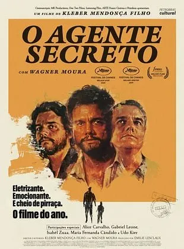
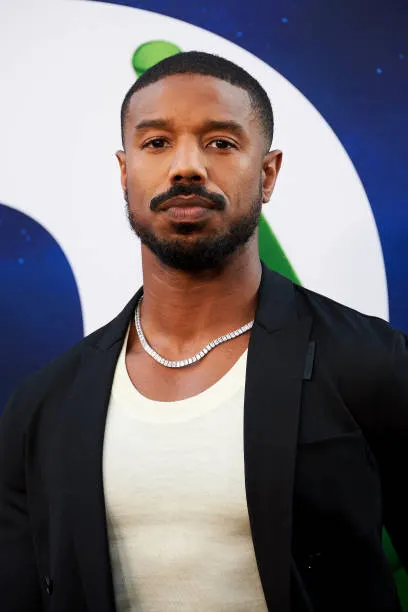
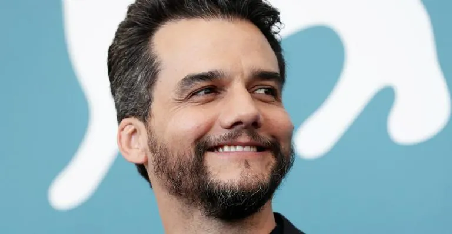
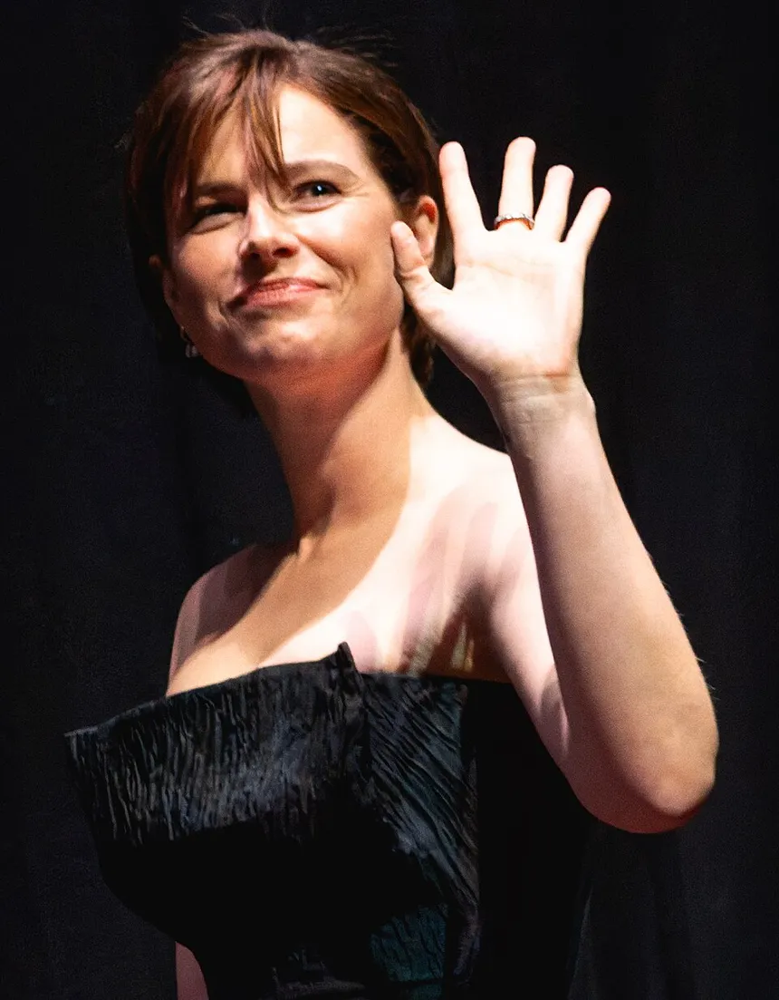

Dossiê de Indicados
Ir para categoria:
Melhor Filme

O Agente Secreto (Brasil) 🇧🇷
Em 1977, Marcelo, especialista em tecnologia acusado de atividades subversivas, foge de São Paulo para Recife tentando escapar dos agentes do governo durante a ditadura militar. Dirigido por Kleber Mendonça Filho, com Wagner Moura no papel principal.
Uma Batalha Após a Outra (EUA) 🏆 VENCEDOR
Bob Ferguson, um ex-revolucionário, é forçado a retomar sua antiga vida combativa quando seu arqui-inimigo ressurge após 16 anos e sequestra sua filha. Com Leonardo DiCaprio, Sean Penn e Benicio Del Toro. Dirigido por Paul Thomas Anderson. Venceu 6 Oscars, incluindo Melhor Filme.
Pecadores (EUA)
Filme de Ryan Coogler com Michael B. Jordan. Entrou para a história como o filme com mais indicações ao Oscar (16), superando Titanic e La La Land. Venceu 4 estatuetas: Melhor Ator, Roteiro Original, Trilha Sonora e Fotografia.
Hamnet (Reino Unido / EUA)
Adaptação que reimagina a vida da família de William Shakespeare após a morte de seu filho Hamnet. Jessie Buckley interpreta Agnes, esposa de Shakespeare (Paul Mescal). Dirigido por Chloé Zhao. Venceu o Oscar de Melhor Atriz.
Frankenstein (EUA)
Adaptação do clássico de Mary Shelley dirigida por Guillermo del Toro. Um cientista brilhante, mas egocêntrico, cria uma criatura em um experimento ousado que leva à ruína de ambos. Com Oscar Isaac e Jacob Elordi. Venceu 3 Oscars em categorias técnicas.
Valor Sentimental (Noruega)
Duas irmãs reencontram o pai distante, Gustav, um cineasta que já foi muito respeitado. Dirigido por Joachim Trier, com Renate Reinsve. Venceu o Oscar de Melhor Filme Internacional.
Marty Supreme (EUA)
Filme com Timothée Chalamet, dirigido por Josh Safdie.
Sonhos de Trem (EUA)
Produção americana com fotografia do brasileiro Adolpho Veloso, que concorreu ao Oscar de Melhor Fotografia, tornando-se o primeiro brasileiro indicado em uma categoria técnica.
Bugonia (EUA)
Dois jovens obcecados por teorias conspiratórias sequestram uma executiva acreditando que ela é uma alienígena. Comédia sombria com Emma Stone e Jesse Plemons.
F1: O Filme (EUA)
Na década de 1990, Sonny Hayes era o piloto mais promissor da Fórmula 1 até que um acidente na pista quase encerrou sua carreira. Venceu o Oscar de Melhor Som.
Melhor Direção
- Paul Thomas Anderson — Uma Batalha Após a Outra 🏆 VENCEDOR
- Ryan Coogler — Pecadores
- Chloé Zhao — Hamnet
- Josh Safdie — Marty Supreme
- Joachim Trier — Valor Sentimental
Melhor Ator


- Michael B. Jordan — Pecadores 🏆 VENCEDOR
- Wagner Moura — O Agente Secreto 🇧🇷
- Leonardo DiCaprio — Uma Batalha Após a Outra
- Timothée Chalamet — Marty Supreme
- Ethan Hawke — Blue Moon
Melhor Atriz

- Jessie Buckley — Hamnet 🏆 VENCEDORA
- Rose Byrne — Se Eu Tivesse Pernas, Eu Te Chutaria
- Renate Reinsve — Valor Sentimental
- Emma Stone — Bugonia
- Kate Hudson — Song Sung Blue: Um Sonho a Dois